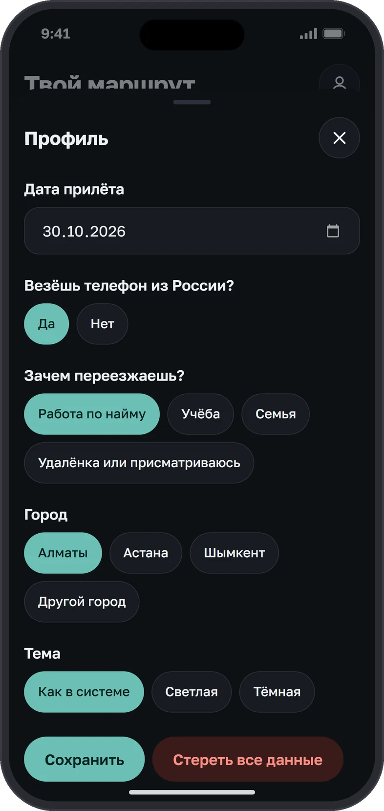
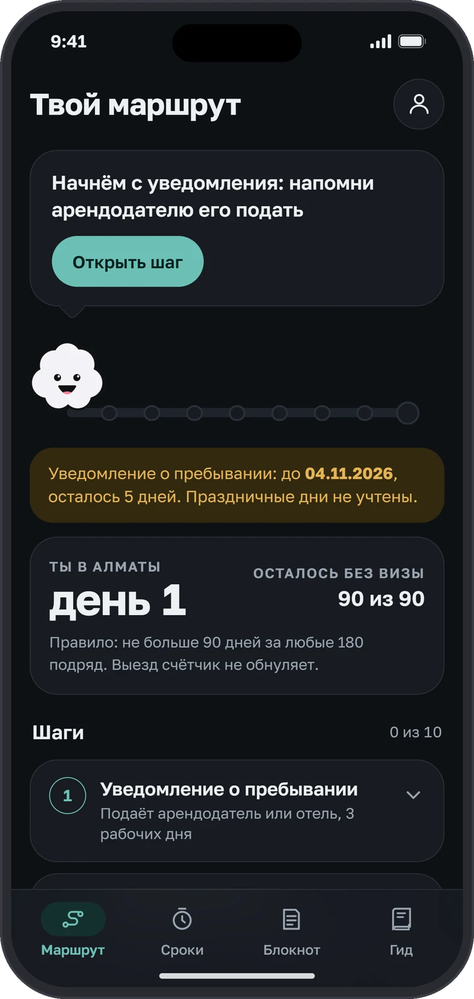
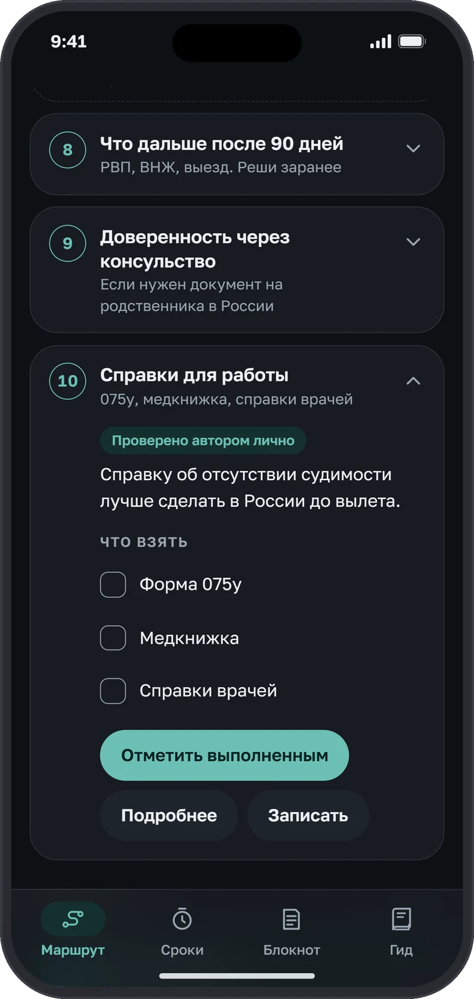
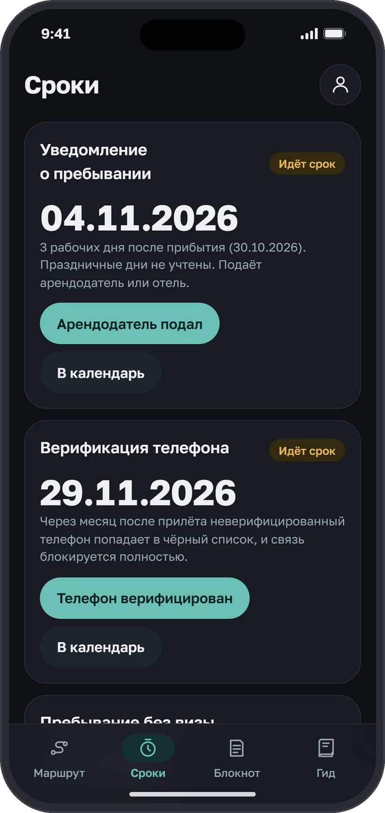
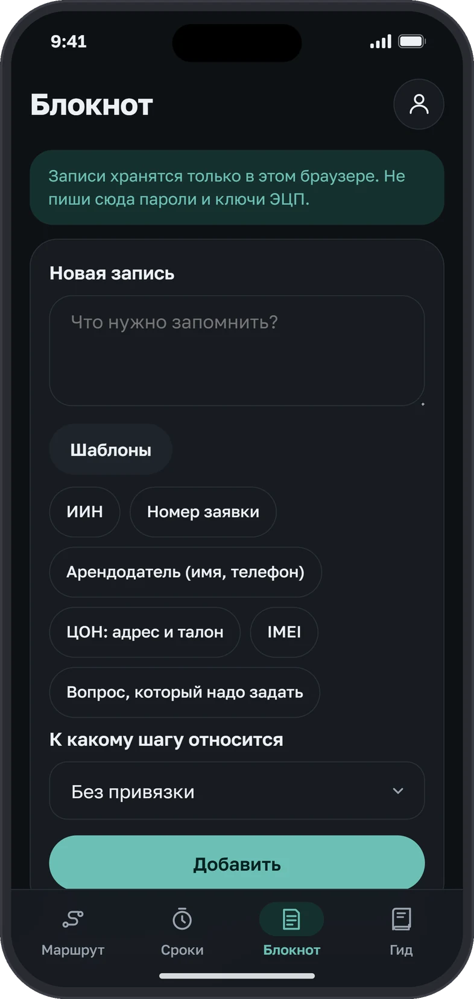
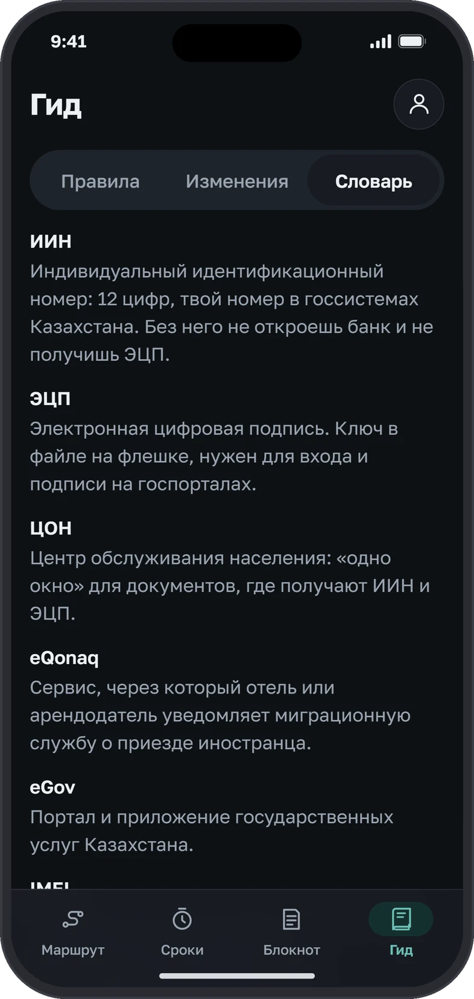
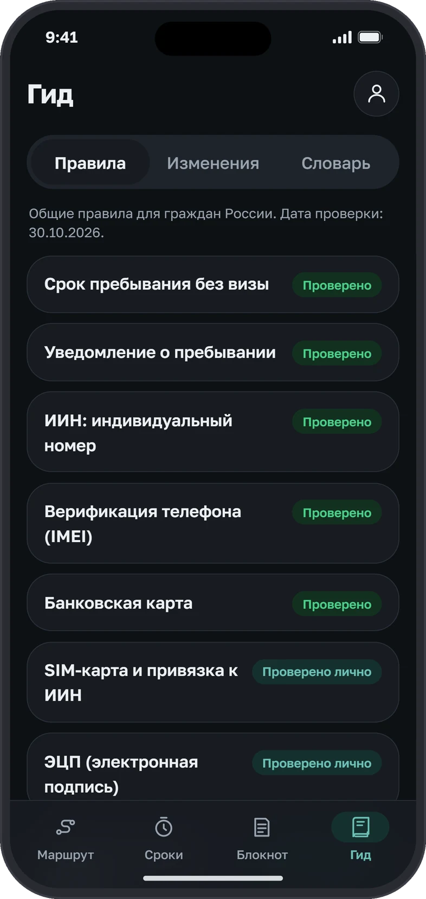
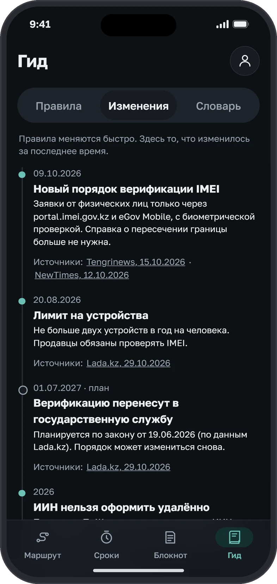
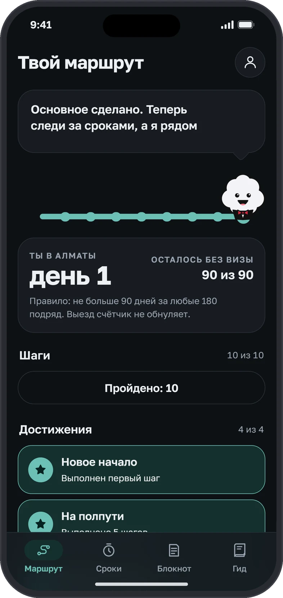
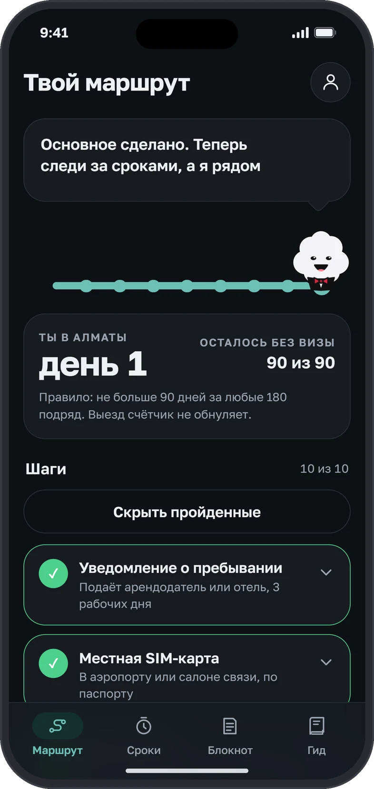

01Профиль

Дата прилёта, телефон, цель и город. Маршрут и сроки пересчитываются под ответы.
Приложение для россиян, которые переезжают в Казахстан: шаги, сроки и правила в одном месте. У каждого правила видно, откуда оно взято: из источников или проверено мной лично.

Нажимай внутри экрана как на телефоне: отмечай шаги, меняй дату прилёта, открывай гид.
В 21 год я переехал из Казани в Алматы и прошёл всё сам: ЦОН, SIM, банк, миграционный учёт, регистрацию телефона. Информации вокруг много, но она лежит в закрепах чатов среди сотен ссылок, а часть правил можно узнать только на месте.
Ошибка здесь стоит дорого. Пропущенное уведомление о пребывании ведёт к штрафу, а в худшем случае к депортации. Телефон без верификации через месяц попадает в чёрный список, и связь блокируется полностью. Со мной это случилось, поэтому я знаю, как это выглядит изнутри.
Собрать весь путь переезда в одном приложении: шаги в правильном порядке, живые сроки от даты прилёта и честная пометка, откуда взято каждое правило.
Работать в рамках собственной дизайн-системы и гайдлайнов iOS, а структуру сразу строить так, чтобы её можно было перенести на другие страны.
Исходником стал мой гайд, который я написал, когда сам проходил путь. Я превратил его в структуру: шаги, зависимости между ними и сроки. Чтобы проверить её на людях, спросил релокантов в чате, что болело больше всего, что они теряли по дороге и что оказалось полезным.
ЭЦП нельзя оформить без ИИН, а IMEI без привязки ИИН к SIM. Поэтому шаги идут по порядку, а недоступные приглушены с подсказкой «Сначала: …». Сроки считаются от даты прилёта: уведомление в 3 рабочих дня, 90 дней из 180 и месяц до блокировки телефона.

Дата прилёта, телефон, цель и город. Маршрут и сроки пересчитываются под ответы.
Эмиль называет следующий шаг, ниже срок уведомления и список шагов.

Что взять с собой, где это и отметка «Источники». В шаге про ЦОН можно сохранить номер талона и не искать его в переписке.

Уведомление, верификация телефона и 90 из 180 с датами и ссылкой в календарь.

Номера заявок, талоны и контакты арендодателя. Есть шаблоны и привязка к шагу.

Правила, изменения и словарь. Незнакомые слова вроде ИИН и ЭЦП объяснены прямо в приложении.


Главная идея. Общедоступные правила взяты из официальных источников. То, чего в них нет, я проверил сам: консульство, ЭЦП, SIM, чёрный список IMEI. Для пользователя разница видна сразу, и ему не нужно гадать, чему верить.
Путь длинный и стрессовый, и человек часто один. Эмиль на дорожке из шагов подсказывает, что делать дальше, и показывает прогресс. Это снижает тревогу и не даёт бросить на середине, а цена пропуска здесь высокая. Достижения даются только за реальные вехи, без серий и штрафов за пропуск.


Токены, шрифт, три радиуса и компоненты в светлой и тёмной теме. Цвет несёт смысл, а не украшает: зелёный значит «подтверждено источниками», бирюзовый «проверено автором лично», жёлтый «идёт срок», красный «правило изменилось». Акцент приложения взят с логотипа. Все значения лежат в CSS-переменных: 15 цветов с парой для светлой и тёмной темы, три радиуса, шрифт и бренд-цвет. Контраст всех пар текста и фона посчитан по WCAG и проходит AA (от 4.5:1). Полная таблица и код есть в UI-ките.
--bg--surface--pri--ok--warn--badПроверил интерфейс по Human Interface Guidelines и поправил то, что не проходило.
Пользователь живёт в сценарии один-три месяца и уходит, а доверие здесь главный актив. Из этого следует выбор.
«мне была бы интересна коллаба с этим приложением, я загоняю трафик, приложение себя»
Мариявладелец одного из каналовМодель монетизации пока гипотеза: цены и спрос не проверялись.
Интерфейс и данные разделены. Шаг, зависимости, срок и метка доверия не привязаны к стране, поэтому каркас переносится как шаблон. Меняется только содержание правил: для Беларуси, Грузии или Сербии нужен свой набор шагов и свои проверенные источники. Эти направления я заложил в архитектуру, но не выпускал.
Опросил релокантов в чате, получил 50 ответов. Вот что показали ответы и что я изменил.
релокантов из чата ответили на вопросы о боли, потерях и пользе.
назвали самым полезным таймеры 90 из 180. Зависимости шагов отметили 82%.
Отдельно спросил, чем приложение удобнее привычного чата в Telegram. Ответы сходились в одном: структура, ничего не теряется, проще ориентироваться.
«В чате телеги мне постоянно нужно идти на закрепленное сообщение и там искать нужное среди миллиарда ссылок, а здесь прошелся минутку и все сложилось»
Андрейпользователь«в тг чат теряется среди кучи других даже если у тебя есть папки, потом почему то уходит желание туда заходить, да и чат бесполезный как правило, чаи гоняют»
ЮлияпользовательОпрос в чате релокантов, n = 50. Цитаты приведены без правок.